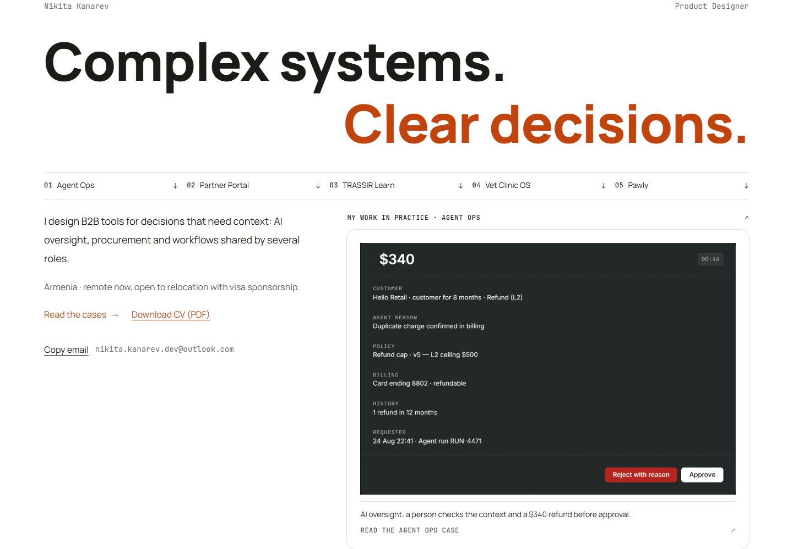
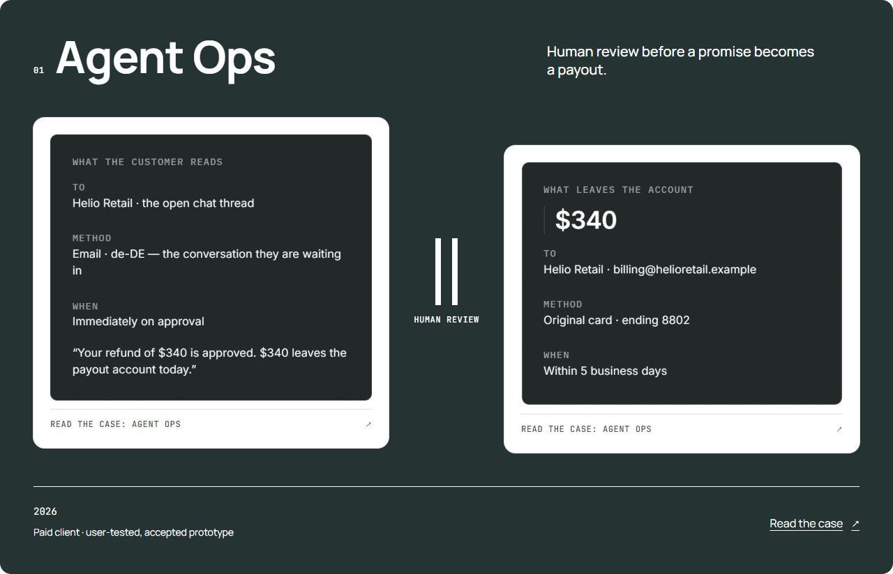
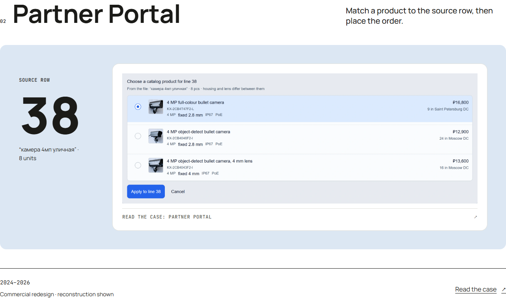
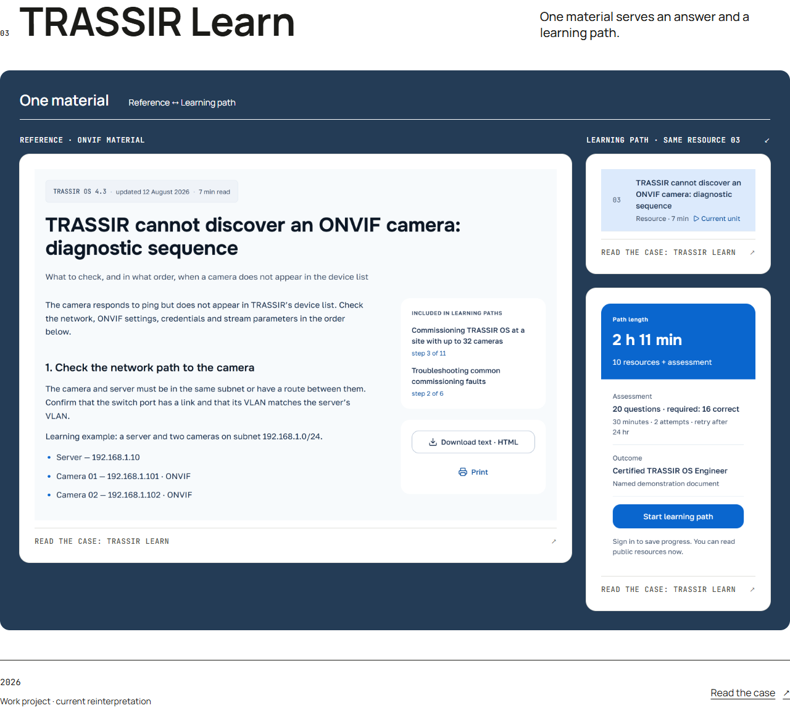
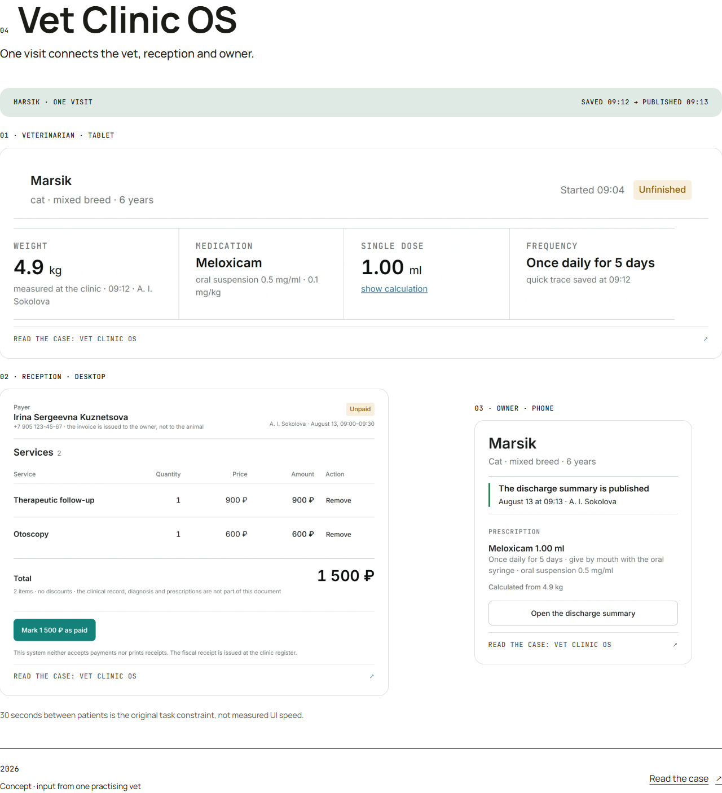
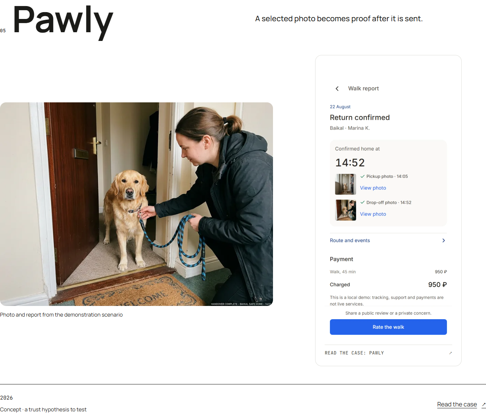
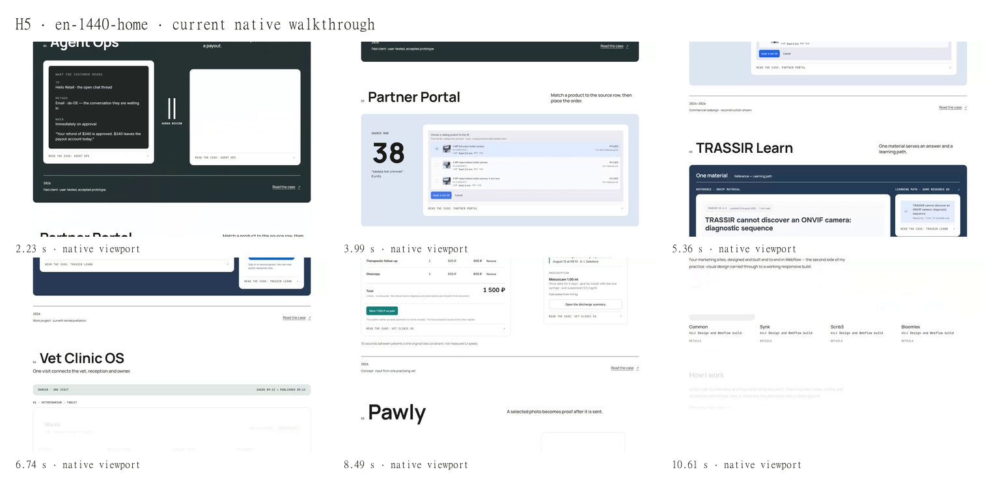
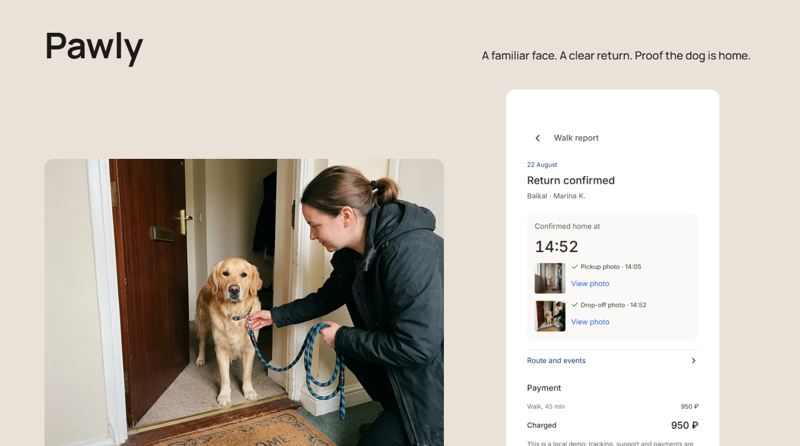
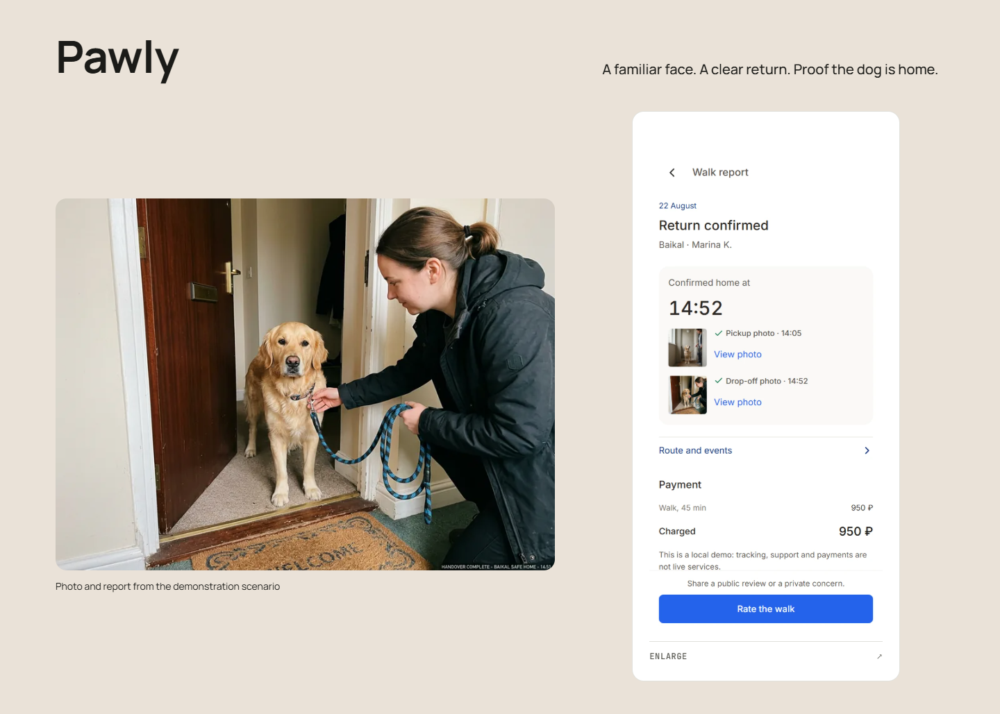

Первый экран · полный смысловой контейнер
Двухстрочная идея, явная роль, пять быстрых входов, настоящий UI и отдельная подпись. На mobile материал предшествует биографии. Никакого crop или маски исходника.
H5 · целый Hero: UI, подпись и контактные действия
Agent Ops
Тёмный флагман и человеческий шлюз сохранены; остальные работы больше не повторяют его внешнюю карточку.
Agent Ops: H3 · полная прежняя карточка Agent Ops: H5 · целая композиция с native материалом
Agent Ops: H5 · целая композиция с native материалом
Partner Portal
Цвет относится к каталожному материалу. Строка38 и весь выбор кандидатов остаются на крупном масштабе.
Partner Portal: H3 · полная прежняя карточка Partner Portal: H5 · целая композиция с native материалом
Partner Portal: H5 · целая композиция с native материалом
TRASSIR Learn
Крупный документ, тот же ресурс03 и полный паспорт создают предметную архитектуру; заголовок вынесен на белую страницу.
TRASSIR Learn: H3 · полная прежняя карточка TRASSIR Learn: H5 · целая композиция с native материалом
TRASSIR Learn: H5 · целая композиция с native материалом
Vet Clinic OS
Светлый маршрут одной записи соединяет три представления. Сохранённые4,9кг и опубликованная выписка видны целиком с полями.
Vet Clinic OS: H3 · полная прежняя карточка Vet Clinic OS: H5 · целая композиция с native материалом
Vet Clinic OS: H5 · целая композиция с native материалом
Pawly
Крупное название, демонстрационная фотография и полный отчёт дают другую плотность и материал.
Pawly: H3 · полная прежняя карточка Pawly: H5 · целая композиция с native материалом
Pawly: H5 · целая композиция с native материалом
Полная выбранная страница · до / после
Текущее движение
24 новые native записи: главная и пять кейсов ×EN/RU ×desktop/mobile. Вход, чтение, осмысленные состояния, Next/Back и обратное чтение. Эти записи относятся к source выше; H1–H3 записи остаются историей.
H5 · выбранная страницаH5 · кадры текущего native walkthrough · весь viewport
Конкретные основания
Blinkov — масштаб типографики и материала, HA — реальные формы и состав, Dounar — предметная архитектура, Victor — фотография и смена ритма. Чужие пиксели используются только здесь для сравнения.
Pawly · обложка целиком
До: source574110a, фиксированная высота отсекала фотографию и отчёт. После: source297ddd3, естественная высота сохраняет весь материал и подписи.
Pawly · прежняя desktop обложка · source574110a
Pawly · исправленная целая desktop обложка · source297ddd3